Festivals & awards







Documentary · Short film
Where Knots are Undone
A short documentary I made about the experiences of South Asian women in America, featuring interviews with Deepti Sharma, Rajita Ravidas and Ritu Mishra.
It explores the cultural challenges they face, the push for gender equity, immigrant wellness, and the strength of community. It's the same subject my paintings keep returning to, this time on film.